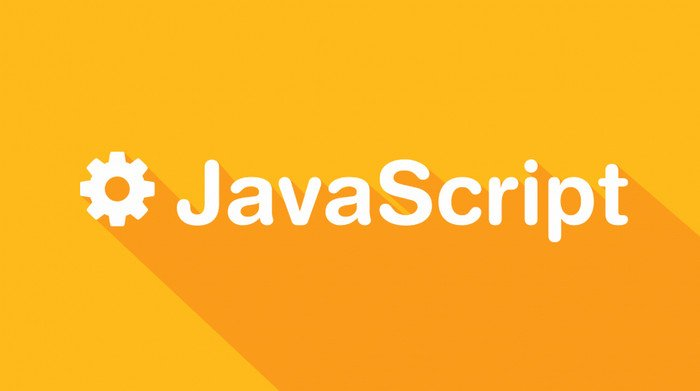
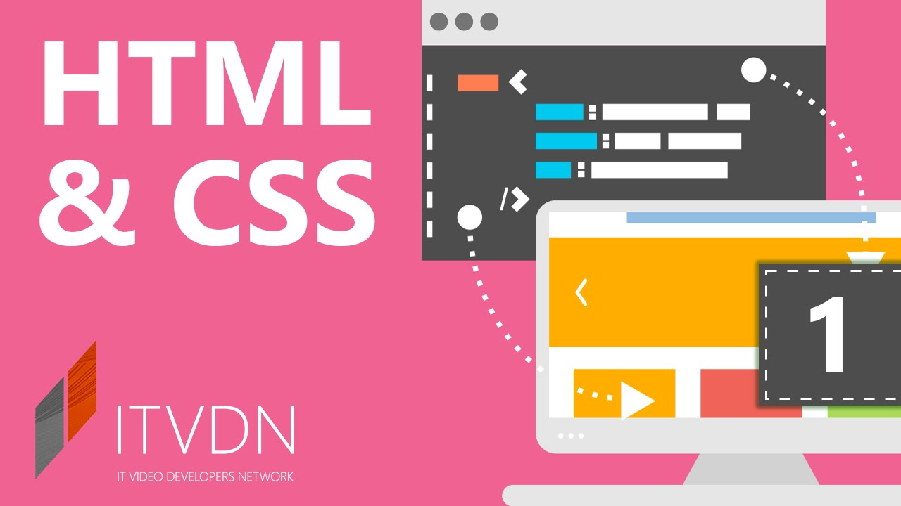
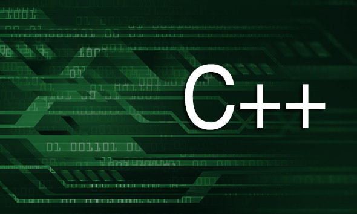

За останні декілька років професія програміста стала однією з найбільш затребуваних та популярних в Україні. Кількість ІТ компаній, яким потрібні нові розробники зростає з кожним днем. Це призводить до великого попиту на ІТ спеціалістів та росту заробітної плати в даній сфері. Освітній центр “YOLO” пропонує перелік 5–ти найпопулярніших мов програмування, на які потрібно звернути увагу.
Java

Надзвичайно поширена мова, адже 90% компаній, що входять в список Fortune (500 найбільших корпорацій світу), так чи інакше використовують в своїх розробках Java. До речі її використовують при розробці операційної системи Android, яка на даний час є найбільш мобільною платформою в світі. Мова була розроблена ще в 1995 році, компанією Oracle і досі залишається на вершині. ЇЇ використовують для розробки десктопних додатків, операційних систем, “back end” систем та багато іншого. Основна її перевага це кросплатформеність. Тому вивчивши цю мову, ви отримаєте безліч можливостей при працевлаштуванні.
Javascript

Хоч і назва цієї мови схожа з попередньою мовою Javascript, це зовсім інша мова програмування. Згідно з сайтом Stackoverflow, Javascript – це найпопулярніша мова програмування серед розробників. Ця мова використовується як одна з основних технологій для створення інтерактивних сайтів разом з HTML та CSS. Адже більшість браузерів використовують саме ці три основні технології. Також, використовуючи її, можна створювати мобільні додатки, ігри та десктопні програми. Тому, якщо ви плануєте розвиватись саме в цих сферах, варто спробувати починати саме з цієї мови програмування.
HTML та CSS

HTML та CSS – це не зовсім мови програмування, і досвідчені програмісти вважають, якщо людина знає лише HTML та CSS, вона не може називати себе програмістом. Проте, ці технології використовуються практично на кожному сайті. Адже саме через них прописується візуальний стиль сайтів, кнопки, іконки та ефекти кожної сторінки. Тому ці мови корисно знати не лише програмістам, але і веб дизайнерам. Тому якщо ви хочете почати свій розвиток в веб розробці чи дизайні, тоді вам в першу чергу варто звернути увагу саме на ці технології.
РНР

Популярність цієї мови програмування пов’язана з тим, що її використовують в найпоширенішій платформі для створення сайтів Wordpress, а 80% найбільш відвідуваних сайтів в світі використовують мову PHP тим чи іншим способом. Вона вважається однією з базових та найпростіших мов програмування, яку має знати кожен, хто називає себе програмістом. Не важливо, чи створюєте ви сайти, складні інтернет магазини чи серверні рішення, вам точно стане в нагоді РНР.
C++

Мова, яку розробили ще 1983 році і на якій створені Microsoft Windows і Google Chrome. Завдяки широкому набору інструментів мова легко адаптується для застосування в різноманітних сферах життя, будь то банківська сфера, розробка ігор, торгівля чи інше. Тому саме на цій мові можна створювати складні комерційні системи з багатьма елементами, так і розробляти прості застосунки та програми. І якщо ви шукаєте мову з широким інструментарієм та функцій, тоді С++ саме для вас.
Висновок
Програмування дає можливість як і добре заробляти, так і мати змогу самостійно планувати графік власної роботи. Тому якщо ви тяжієте до програмування, ласкаво просимо на наші курси програмування. Записуйтесь та приходьте на заняття.